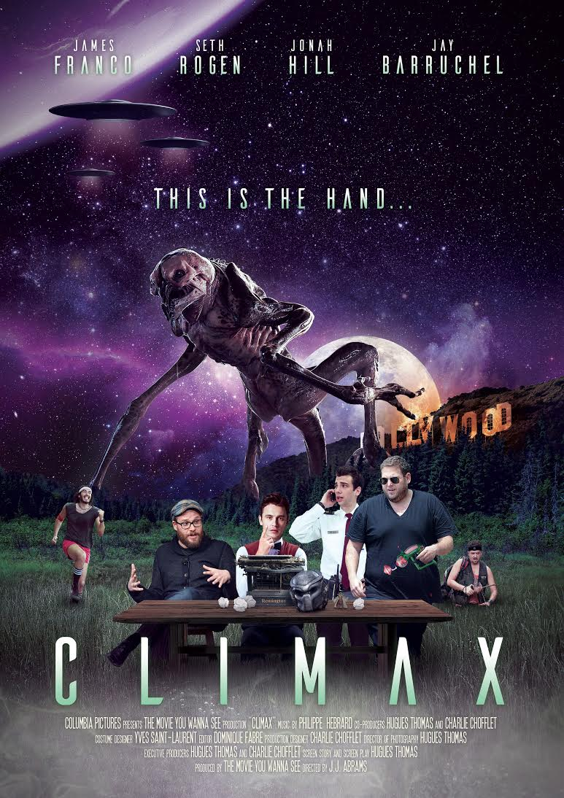
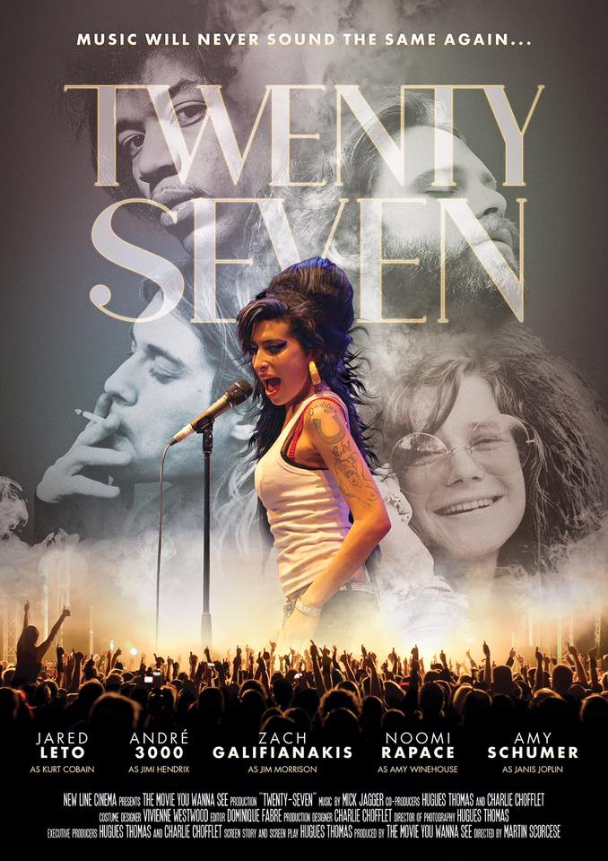
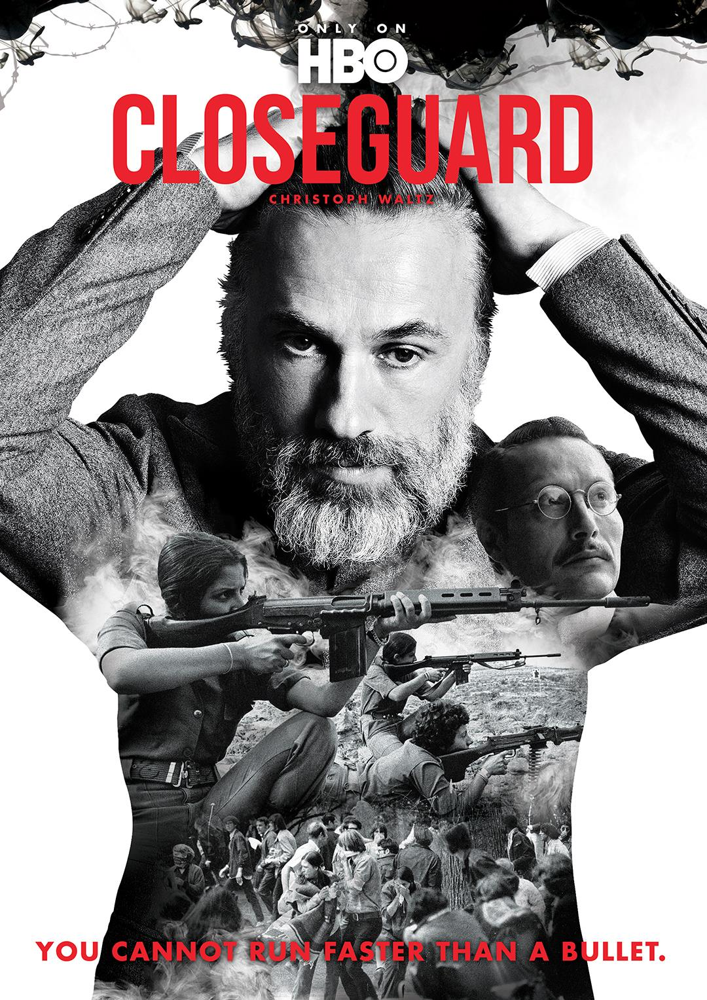

After 5 years living in the US, I eventually decided to come back to motherland to put to good use my knowledge of the capitalist world and its ways...
|  |
CLIMAXA scientist discovers that planet Earth has been surrounded by UFOs for many decades. Reason why they have never attacked... Hollywood movies have already counter attacked their plans to invade. Independance day, Predator, Signs, Mars attacks... All these magnificent movies that only served as entertainment, turned out to be the means of our survival. With the decline of the film industry, sci-fi movies have not been has great as they used to be, allowing aliens to find a breach in our defense. Our only hope, as bad as it seems, a group of geeks that figured out the solution... Write the perfect Hollywood screenplay… |
 |
THE BOY IN BETWEENIn the two most critical weeks of his existence, a 7 year old boy suffering from leukemia since a very early age finds a means of escape via an abandoned theater. Accompanied by "the people in charge" of the theater, they will put their minds together to conceive a play that will be the missing piece between fiction and reality. |
|  |
TWENTY SEVENIn a world with a shortage of drugs, in which the music industry is driven by a whole new beat, the 27 club, composed of some of the most historical rockstars who died at 27, has been resurrected! Jimi Hendrix, Kurt Cobain, Jim Morrison, Janis Joplin and Amy Winehouse will have to struggle to re-discover the essence of music and eventually perform at the most epic concert of all time. They will once again redefine what music really is all about... |
|  |
CLOSEGUARDA nation rising against its despotic government and a close guard struggling in its actions. Welcome to the new HBO fake TV series based in a fictive society where a dictatorship in place for decades is about to live its most fearful moments. In the last few months prior to an organized coup d'état the rebels are gathering more and more soldiers. The dictator has lost any sense of reason which, little by little, makes his closest guards question his judgement. His once most loyal soldiers and councilors will soon have to choose their side... |
I was forced against my will to create this webpage. If I would have had the chance I would have done it differently...